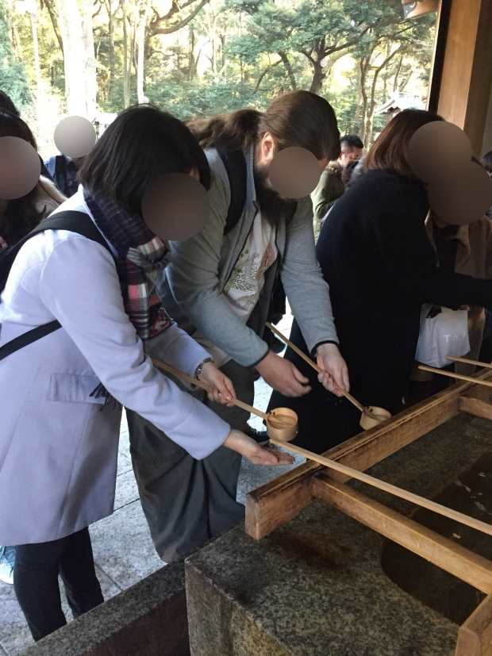
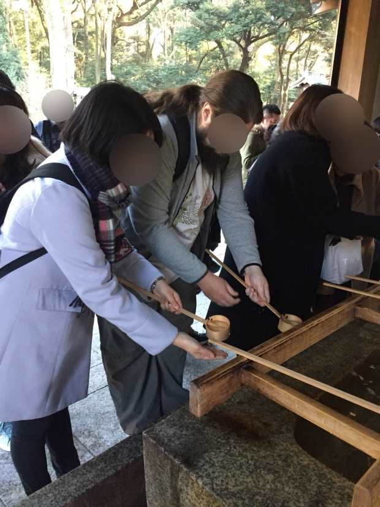
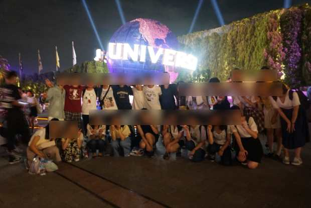
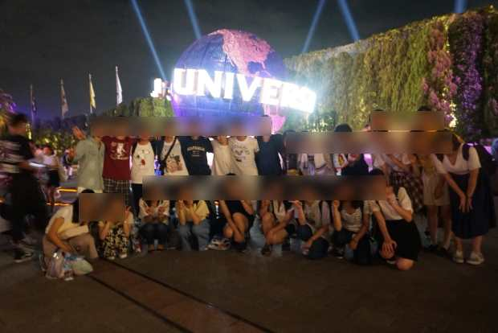

Guide
Guideとは
Guideは、東京の観光名所（明治神宮・皇居・浅草寺）で外国の方を英語で案内をする活動です。4～6人程度のグループを作り、各地にやってくる外国の方に声をかけて、英語でガイドさせてもらいます。
WRESSの中でも一番外国の方と接する機会が多い活動です。ネイティブの英語はもちろん、それだけでなく、欧州や南米の各地の訛りを持った“生きた英語”を聞くことができ、実践的な英語を身に着けることができます。
案内が不安という方でも、日本語でガイドしてみる機会や、ガイドのための資料があるので、大丈夫です。
主に週末や長期休みに明治神宮・皇居・浅草寺の三か所で活動しています。
 

他大とのつながり
Guideは、WRESSのみで行うインナーガイドもありますが、基本的に他大と一緒に行います。次の13大学のESSが加盟している東京学生ガイド連盟に加盟しており、これらの大学の学生と交流を持つことができます。
- お茶の水女子大学E.S.S.
- 中央大学英語学会
- 一橋大学国際部
- 東京大学E.S.S.
- 東京外国語大学ESS
- 東京理科大学神楽坂ESS
- 東京理科大学野田校舎英語研究会
- 東京女子大学英語会Q.G.S.
- 首都大学東京ESS
- 津田塾大学ESS
- 聖心女子大学E.S.S.
- 立教大学英語会
- 青山学院大学E.S.S.
京都ガイド
毎年夏に東京学生ガイド連盟と関西学生ガイド連盟の共催で、京都でガイドを行う京都ガイドを開催しています。京都の観光地、清水寺・龍安寺・銀閣寺・平安神宮の4か所のガイドができます。
ガイド後にはUSJや京都市内の観光もできる夏休みの楽しいイベントの一つです。
 
